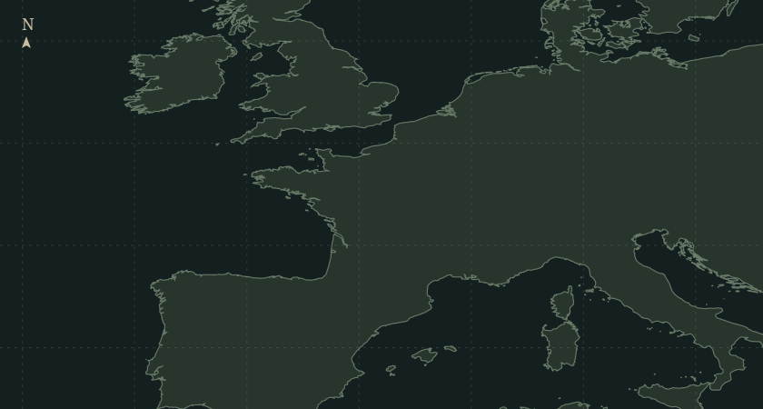

Five strands of family history
My maternal heritage is predominantly Azorean Portuguese and also includes Galician ancestry. Weber is the surname of my Germanic and Flemish paternal line. Charrúa heritage is another part of my family memory.
Ancestry atlas
Explore the regions that frame my heritage and the places I study. Markers identify broad heritage regions, historical landmarks and research interests.
- Heritage region
- Historical region
- Research interest




Choose a place to read its connection.
Heritage region
Azores
The archipelago is a regional reference for Azorean Portuguese heritage.
Heritage region
Galicia
A region associated with Galician heritage and an interest in its language and history.
Heritage region
Flanders
Modern Flanders provides geographic orientation for the historical region of Flanders.
Historical region
Río de la Plata
A regional landmark for the history of the Charrúa and neighbouring Indigenous peoples.
Historical region
Florianópolis / Desterro
Formerly Nossa Senhora do Desterro, a point of reference for the history of Azorean settlement in Santa Catarina.
Research interest
Bremen
A Hanseatic port and a point of orientation for the Weser basin.
Research interest
Hanover
A place to study the historical administration and politics of northern Germany.
Modern locator map · Natural Earth coastline · Select markers or place names.
Family memory and regional history
I share broad ancestral connections and the surname Weber. Public historical sources give context for the regions, peoples and cultures that shaped this history.